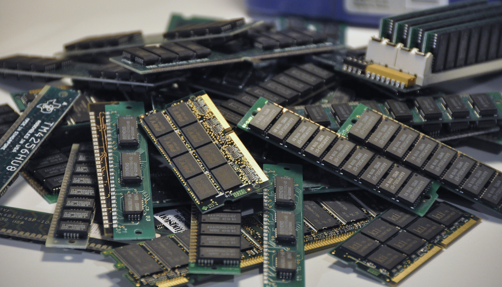
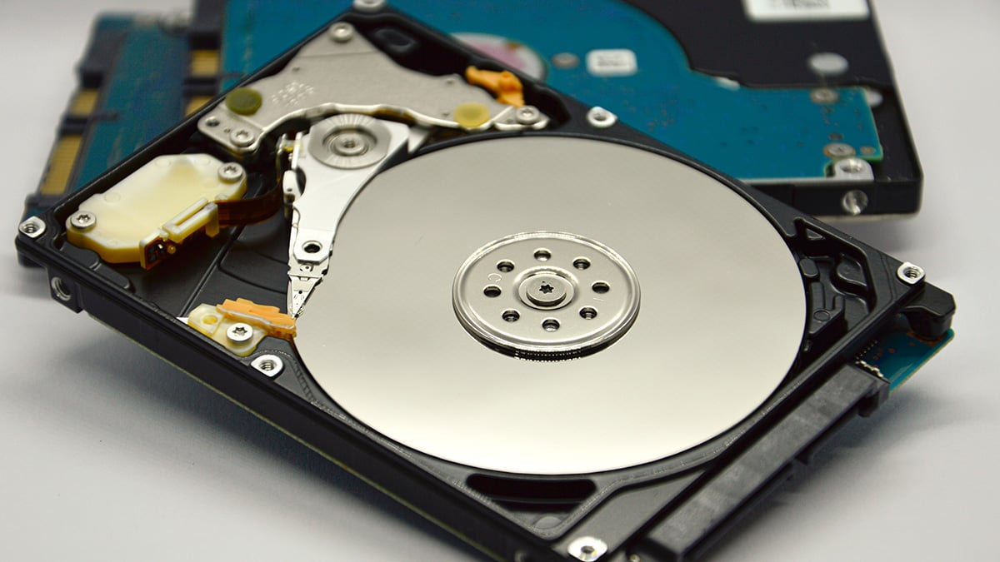

RAM Recycling

Collection and recycling pf old RAM modules tp extract valuable metals like gold and copper.
Benefits
Reduces e-waste and reuses materials for new production.
Hard Drive Destruction

Securely erases and physically destroys hard drives to prevent data leaks.
Method Used:
- Degaussing (magnetic destruction of data)
- Shredding (physically breaking the hard drive)
- Software-Based Data Wiping
Motherboard Componet Recovery

Extracting reusable parts from old motherbords, such as processors, capacitors, and IC chips.
Process
- Inspection- Identifying salvageable parts
- Extraction- Removing and testing coponents
- Resale/ Recycling- Sending recovered materials for repurposing